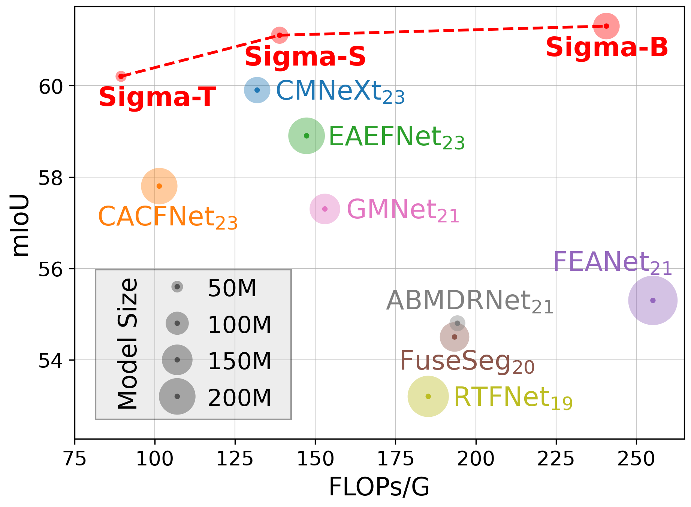
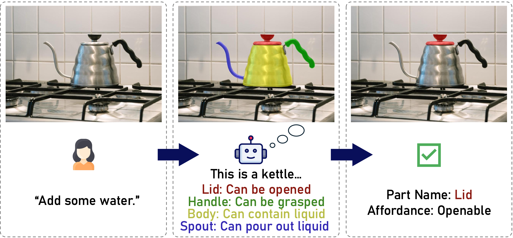
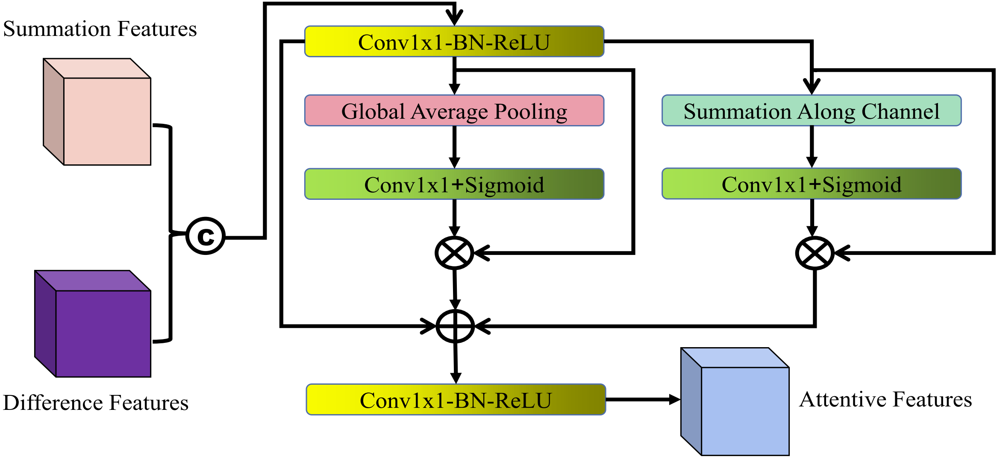
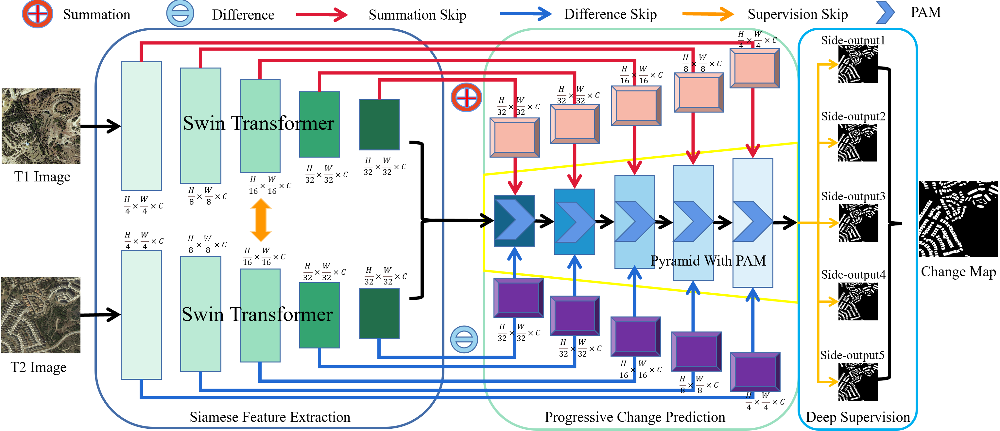
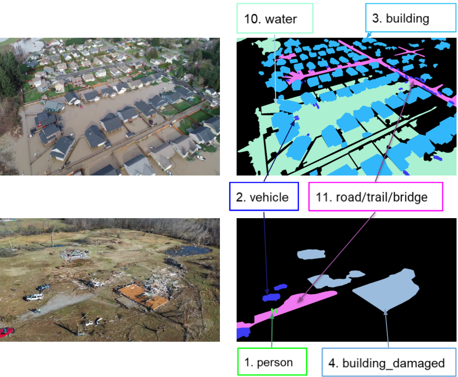

|

|
Sigma: Siamese Mamba Network for Multi-Modal Semantic Segmentation
Zifu Wan, Pingping Zhang, Yuhao Wang, Silong Yong, Simon Stepputtis, Katia Sycara, Yaqi Xie
WACV 2025
pdf |
abstract |
bibtex |
arXiv |
code |
X
Multi-modal semantic segmentation significantly enhances AI agents' perception and scene understanding, especially under adverse conditions like low-light or overexposed environments. Leveraging additional modalities (X-modality) like thermal and depth alongside traditional RGB provides complementary information, enabling more robust and reliable segmentation. In this work, we introduce Sigma, a Siamese Mamba network for multi-modal semantic segmentation, utilizing the Selective Structured State Space Model, Mamba. Unlike conventional methods that rely on CNNs, with their limited local receptive fields, or Vision Transformers (ViTs), which offer global receptive fields at the cost of quadratic complexity, our model achieves global receptive fields coverage with linear complexity. By employing a Siamese encoder and innovating a Mamba fusion mechanism, we effectively select essential information from different modalities. A decoder is then developed to enhance the channel-wise modeling ability of the model. Our method, Sigma, is rigorously evaluated on both RGB-Thermal and RGB-Depth segmentation tasks, demonstrating its superiority and marking the first successful application of State Space Models (SSMs) in multi-modal perception tasks. Code is available at this URL.
@article{wan2024sigma,
title={Sigma: Siamese Mamba Network for Multi-Modal Semantic Segmentation},
author={Wan, Zifu and Wang, Yuhao and Yong, Silong and Zhang, Pingping and Stepputtis, Simon and Sycara, Katia and Xie, Yaqi},
journal={arXiv preprint arXiv:2404.04256},
year={2024}
}
|
|

|
InstructPart: Affordance-based Part Segmentation from Language Instruction
Zifu Wan, Yaqi Xie, Ce Zhang, Zhiqiu Lin, Zihan Wang, Simon Stepputtis, Deva Ramanan, Katia Sycara
AAAI 2024 Workshop PubLLM
pdf |
abstract |
bibtex
Recent advancements in Vision-Language Models (VLMs) have led to their increased application in robotic tasks. While the implementation of VLMs is primarily at the object level, the distinct affordances of an object's various parts — such as a knife's blade for cutting versus its handle for grasping — remain a challenge for current state-of-the-art models. Our investigations reveal that these models often fail to accurately segment parts based on task instructions, a capability crucial for precise robotic interactions. Addressing the lack of real-world datasets to evaluate these fine-grained tasks, we introduce a comprehensive dataset that includes image observations, task descriptions, and precise annotations for object-part interactions, complemented by part segmentation masks. We present an evaluation of common pre-trained VLMs using this benchmark, shedding light on the models' performance in understanding and executing part-level tasks within everyday contexts.
@inproceedings{wan2024instructpart,
title={InstructPart: Affordance-based Part Segmentation from Language Instruction},
author={Wan, Zifu and Xie, Yaqi and Zhang, Ce and Lin, Zhiqiu and Wang, Zihan and Stepputtis, Simon and Ramanan, Deva and Sycara, Katia P},
booktitle={AAAI-2024 Workshop on Public Sector LLMs: Algorithmic and Sociotechnical Design},
year={2024}
}
|
|

|
TransY-Net:Learning Fully Transformer Networks for Change Detection of Remote Sensing Images
Tianyu Yan*, Zifu Wan*, Pingping Zhang, Gong Cheng, Huchuan Lu
IEEE Transactions on Geoscience and Remote Sensing (TGRS)
pdf |
abstract |
bibtex |
arXiv
In the remote sensing field, Change Detection (CD) aims to identify and localize the changed regions from dual-phase images over the same places. Recently, it has achieved great progress with the advances of deep learning. However, current methods generally deliver incomplete CD regions and irregular CD boundaries due to the limited representation ability of the extracted visual features. To relieve these issues, in this work we propose a novel Transformer-based learning framework named TransY-Net for remote sensing image CD, which improves the feature extraction from a global view and combines multi-level visual features in a pyramid manner. More specifically, the proposed framework first utilizes the advantages of Transformers in long-range dependency modeling. It can help to learn more discriminative global-level features and obtain complete CD regions. Then, we introduce a novel pyramid structure to aggregate multi-level visual features from Transformers for feature enhancement. The pyramid structure grafted with a Progressive Attention Module (PAM) can improve the feature representation ability with additional inter-dependencies through spatial and channel attentions. Finally, to better train the whole framework, we utilize the deeply-supervised learning with multiple boundary-aware loss functions. Extensive experiments demonstrate that our proposed method achieves a new state-of-the-art performance on four optical and two SAR image CD benchmarks. The source code is released at this URL.
@article{yan2023transy,
title={TransY-Net: Learning Fully Transformer Networks for Change Detection of Remote Sensing Images},
author={Yan, Tianyu and Wan, Zifu and Zhang, Pingping and Cheng, Gong and Lu, Huchuan},
journal={IEEE Transactions on Geoscience and Remote Sensing},
year={2023},
publisher={IEEE}
}
|
|

|
Fully Transformer Network for Change Detection of Remote Sensing Images
Tianyu Yan, Zifu Wan, Pingping Zhang
ACCV 2022
pdf |
abstract |
bibtex |
arXiv |
code
Recently, change detection (CD) of remote sensing images have achieved great progress with the advances of deep learning. However, current methods generally deliver incomplete CD regions and irregular CD boundaries due to the limited representation ability of the extracted visual features. To relieve these issues, in this work we propose a novel learning framework named Fully Transformer Network (FTN) for remote sensing image CD, which improves the feature extraction from a global view and combines multi-level visual features in a pyramid manner. More specifically, the proposed framework first utilizes the advantages of Transformers in long-range dependency modeling. It can help to learn more discriminative global-level features and obtain complete CD regions. Then, we introduce a pyramid structure to aggregate multi-level visual features from Transformers for feature enhancement. The pyramid structure grafted with a Progressive Attention Module (PAM) can improve the feature representation ability with additional interdependencies through channel attentions. Finally, to better train the framework, we utilize the deeply-supervised learning with multiple boundaryaware loss functions. Extensive experiments demonstrate that our proposed method achieves a new state-of-the-art performance on four public CD benchmarks. For model reproduction, the source code is released at this URL.
@inproceedings{yan2022fully,
title={Fully transformer network for change detection of remote sensing images},
author={Yan, Tianyu and Wan, Zifu and Zhang, Pingping},
booktitle={Proceedings of the Asian Conference on Computer Vision},
pages={1691--1708},
year={2022}
}
|
|

|
IEEE Low-Power Computer Vision Challenge 2023
Zifu Wan, Xinwang Chen, Ning Liu, Ziyi Zhang, Dongping Liu, Ruijie Shan, Zhengping Che, Fachao Zhang, Xiaofeng Mou, Jian Tang
LPCV 2023, 2nd award
competition website |
winner announcement |
IEEE news |
pdf |
abstract |
bibtex |
arXiv |
code
This article describes the 2023 IEEE Low-Power Computer Vision Challenge (LPCVC). Since 2015, LPCVC has been an international competition devoted to tackling the challenge of computer vision (CV) on edge devices. Most CV researchers focus on improving accuracy, at the expense of ever-growing sizes of machine models. LPCVC balances accuracy with resource requirements. Winners must achieve high accuracy with short execution time when their CV solutions run on an embedded device, such as Raspberry PI or Nvidia Jetson Nano. The vision problem for 2023 LPCVC is segmentation of images acquired by Unmanned Aerial Vehicles (UAVs, also called drones) after disasters. The 2023 LPCVC attracted 60 international teams that submitted 676 solutions during the submission window of one month. This article explains the setup of the competition and highlights the winners' methods that improve accuracy and shorten execution time.
@article{chen20242023,
title={2023 Low-Power Computer Vision Challenge (LPCVC) Summary},
author={Chen, Leo and Boardley, Benjamin and Hu, Ping and Wang, Yiru and Pu, Yifan and Jin, Xin and Yao, Yongqiang and Gong, Ruihao and Li, Bo and Huang, Gao and others},
journal={arXiv preprint arXiv:2403.07153},
year={2024}
}
|
ACM Multimedia (MM) 2024
IEEE International Conference on Multimedia and Expo (ICME), 2024
IEEE Transactions on Circuits and Systems for Video Technology (TCSVT)
|
|
{kind=link}